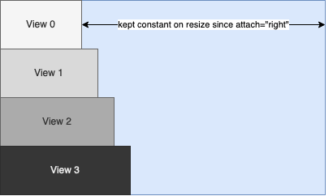
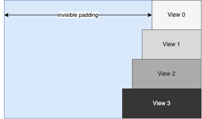

Layouts
Each view can contain other views as child views. The coordinates of a child view are relative to the parent view. If a part of the child view exceeds the area of the parent view it is clipped.
By default, resizing a view doesn’t affect the size or relative position of it’s children. However, the “attach” attribute of a <View> offers several options to define a certain relationship between positions and sizes of child and parent views.
Basic Layout of Views
By specifying one or more of the four edge names “left, right, top, bottom” the respective edges of the child follow the corresponding parent edges. When the parent view is resized, the distance between an attached child edge and it’s corresponding parent edge stays fixed as long as possible within the current size limits.
Table 3.1. View Attach Examples
Attachement |
Description |
|---|---|
attach=”left” |
|
attach=”right” |
View follows the right parent edge |
attach=”left right” |
Both left and right edges are attached to the parent, the view is resized by the same amount as its parent |
attach=”all” |
|
attach=”hcenter vcenter” |
View is centered in parent |
attach=”hfit vfit” |
Fit size of view to its child views |
Responsive Children and Alignment
Within a tree of views there are in general two types of reaction to a change:
Parents react to changes within their children e.g. a view suddenly has to provide more information and needs more space so the parent increases it’s size to fit all children
Children react to changes within their parent e.g. the parent is restricted to a certain size, maybe due to a small screen, so it’s children have to adapt to the available space
In the latter case, the behaviour of “attach” must not be confused with alignment, i.e. setting attach=”right” on all children of a view like
<Vertical width="400" attach="left right">
<View0... width="100" attach="right"/>
<View1... width="120" attach="right"/>
<View2... width="140" attach="right"/>
<View3... width="160" attach="right"/>
</Vertical>
will result in the following layout:
{kind=link}
The attachment to the right edge doesn’t affect the initial positions and sizes of view 0 to 3 but defines that the distances to the right edge of the parent should remain constant when the parent is resized.
Alignment with the right edge of the parent can be achieved by adding automatically sized padding using <View> or <Space> objects in combination with the “unifysizes” option in parent views.
<Vertical options="unifysizes" width="400" attach="left right">
<Horizontal attach="left right">
<Space attach="left right"/>
<View0... width="100"/>
</Horizontal>
<Horizontal attach="left right">
<Space attach="left right"/>
<View0... width="120"/>
</Horizontal>
<Horizontal attach="left right">
<Space attach="left right"/>
<View0... width="140"/>
</Horizontal>
<Horizontal attach="left right">
<Space attach="left right"/>
<View0... width="160"/>
</Horizontal>
</Vertical>
results in:
{kind=link}
Specialized Layout Containers
To be continued …